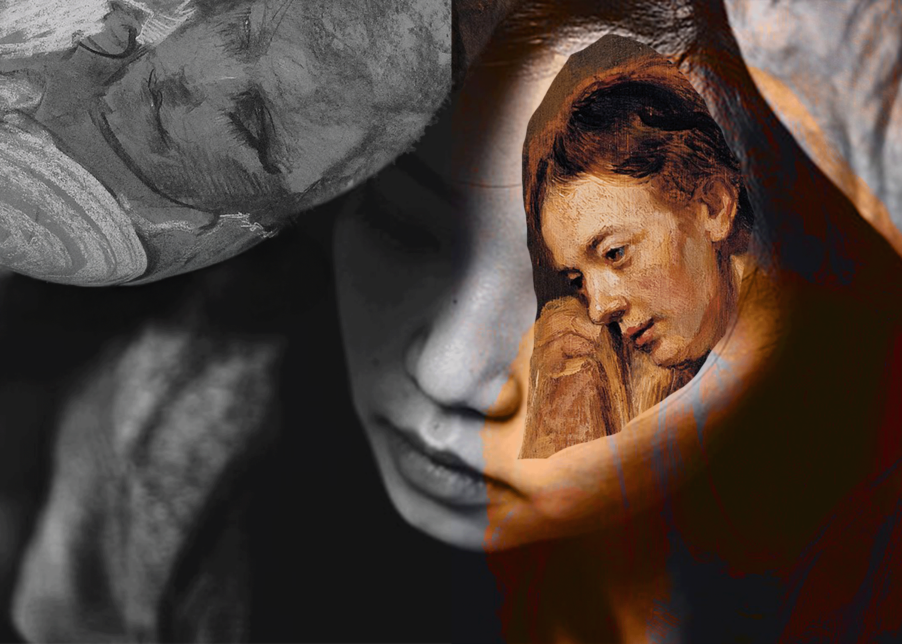

Masking Mode
In this second piece I mainly worked with masks to cut out and overlap faces that intertwine with each other. My intention was to represent the emotional weight that many women carry, the sadness, the exhaustion, and the inner reflection that rarely comes to the surface. The superposition of a classical painted face over a contemporary photograph seeks to connect past experiences with those of the present, suggesting that female vulnerability has been constant over time. With the masks I was able to reveal precise fragments and create a visual contrast between what is visible and what is hidden, reinforcing the idea of emotional layers that remain inside.
